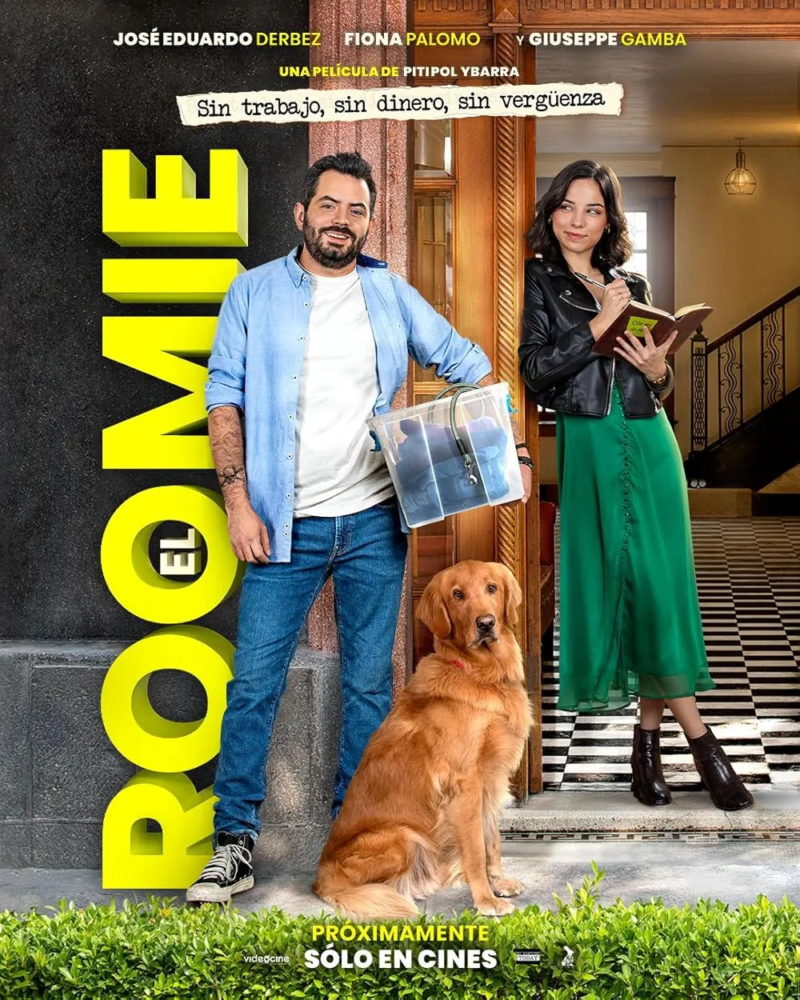
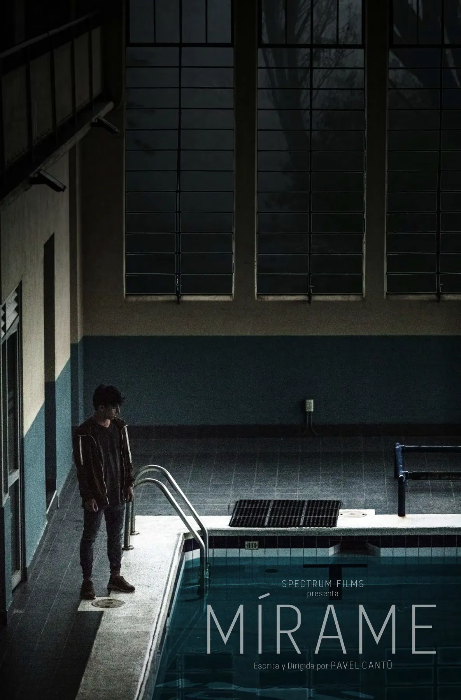
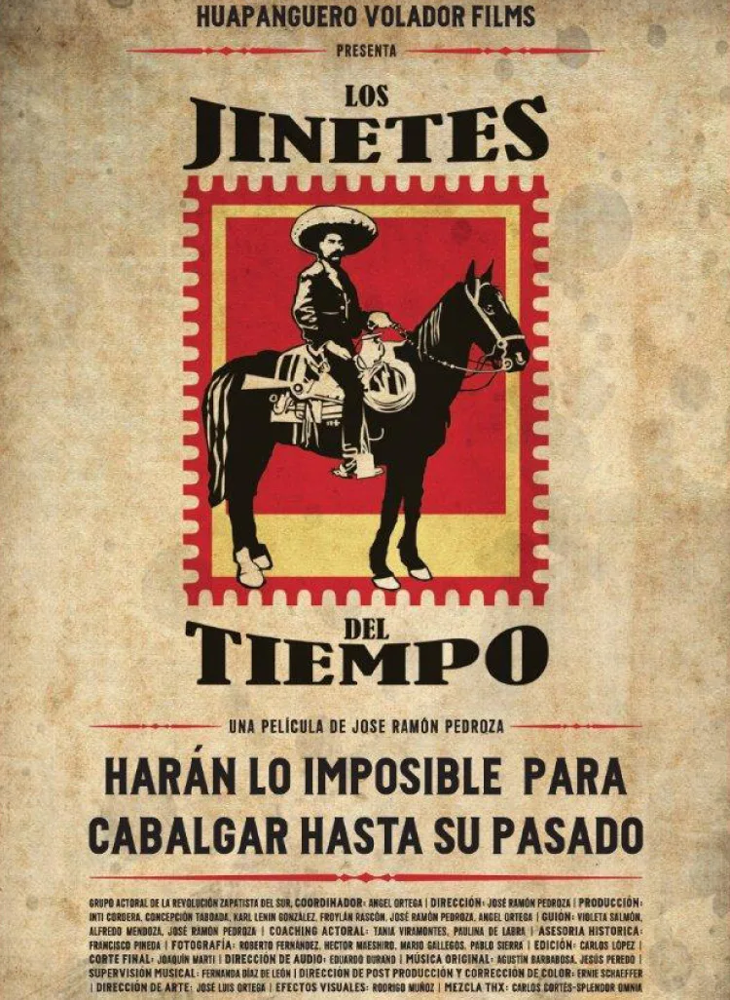
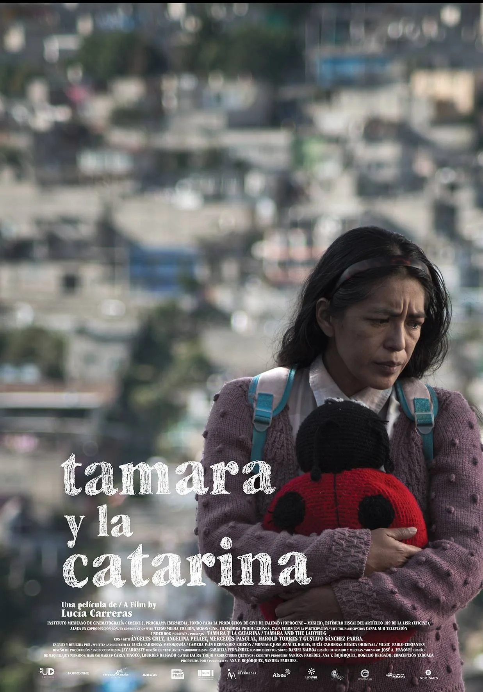

Mahsa (Or the Girl That Ate Her Way Home)
Director: Travis Hanour
Documental: Mahsa Darabi se embarca en un viaje para encontrar el camino de regreso a sus raíces iraníes a través del lenguaje común de la comida.
Director: Travis Hanour
Documental: Mahsa Darabi se embarca en un viaje para encontrar el camino de regreso a sus raíces iraníes a través del lenguaje común de la comida.
Directora: Bonnie Cartas
Comedia: Tras la muerte de su padre, Marina (Michelle Renaud), creadora de contenidos, decide llevar a Patricia, su mamá (Erika Buenfil), a vivir con ella y su roomie. Patricia cree que debe comportarse como la viuda que ahora es. Pero cuando se va a vivir con Marina, se da cuenta de que le quedan muchas cosas por hacer. Madre e hija recorren un camino de reconexión, siguiendo una lista y con un nuevo mundo que explorar.

Director: Pitipol Ybarra
Comedia: Vivi es una joven escritora que necesita un compañero de departamento para pagar la renta. Acepta a Roy, un tipo acostumbrado a vivir sin pagar jamás y, aunque Vivi se da cuenta de ello, lo admite porque él la inspira profesionalmente.
Director: Gilles de Maistre
Prod. Co.: Mediawan (FR)
Prod. Co. México: Spectrum Films
Drama sobre la relación entre una niña y un jaguar salvaje que crecen juntos en la selva del Amazonas. Años después, ella regresa para reencontrarlo.
Director: Pitipol Ybarra
Prod. Co.: Spectrum Films
Comedia sobre un cuarentón fiestero que descubre que tiene una hija y que está a punto de convertirse en abuelo.
Director: Alan Jonsson
Prod. Co.: AMPC (US)
Prod. Co. México: Spectrum Films
Una madre y su hija, separadas en la frontera de Estados Unidos, deben encontrar el camino de regreso.

Director: Pavel Cantú
Prod. Co.: Spectrum Films
Lalo se muda a una vieja casona y, tras tomar un reloj de su padre, comienza a ser acosado por el fantasma de una joven.
Director: Luis Eduardo Reyes
Prod. Co.: Spectrum Films
Una ejecutiva adicta al trabajo pierde todo y encuentra, gracias a una nueva amistad, un rumbo inesperado para su vida.
Director: Daishi Matsunaga
Prod. Co.: Cinema Fighter (JAP)
Prod. Co. México: Spectrum Films
Una fusión de poesía, música y cine que da nacimiento a una nueva forma de narrar.
Director: Chava Cartas
Prod. Co.: Draco Films
Productora: C. Taboada
Un grupo de adolescentes debe enfrentarse a un apocalipsis zombi y ayudar a restablecer el orden.
Directores: Catalina Aguilar Mastretta y Santiago Limón
Prod. Co.: Draco Films
Productora: C. Taboada
Cindy huye de Monterrey a la Ciudad de México, donde nuevas amistades le muestran otras posibilidades para su vida.
Director: Chava Cartas
Prod. Co.: Draco Films
Productora: C. Taboada
Genaro ha dedicado su vida a Kuri & Sons. La muerte de su jefe lo confrontará con el hijo que ahora quiere dirigir la empresa.

Director: José Ramón Pedroza
Prod. Co.: Huapanguero Volador
Productora: C. Taboada
Documental sobre el viaje de Zapata y Pancho Villa para tomar la Ciudad de México en 1914.

Prod. Co.: Underdog
Co-Prod. Co.: Spectrum Films
Tamara y Doña Meche se unen para devolver a una bebé, dando forma a una historia de solidaridad femenina.
Director: Lisandro Duque Naranjo
Prod. Co.: Spectrum Films
Un sacerdote se niega a administrar sacramentos hasta que retiren un cuerpo del cementerio; entonces afloran los secretos del pueblo.